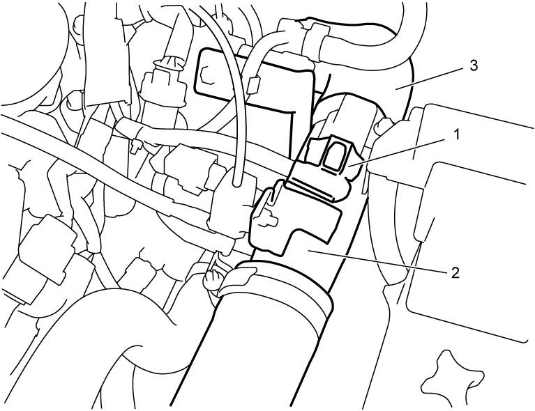
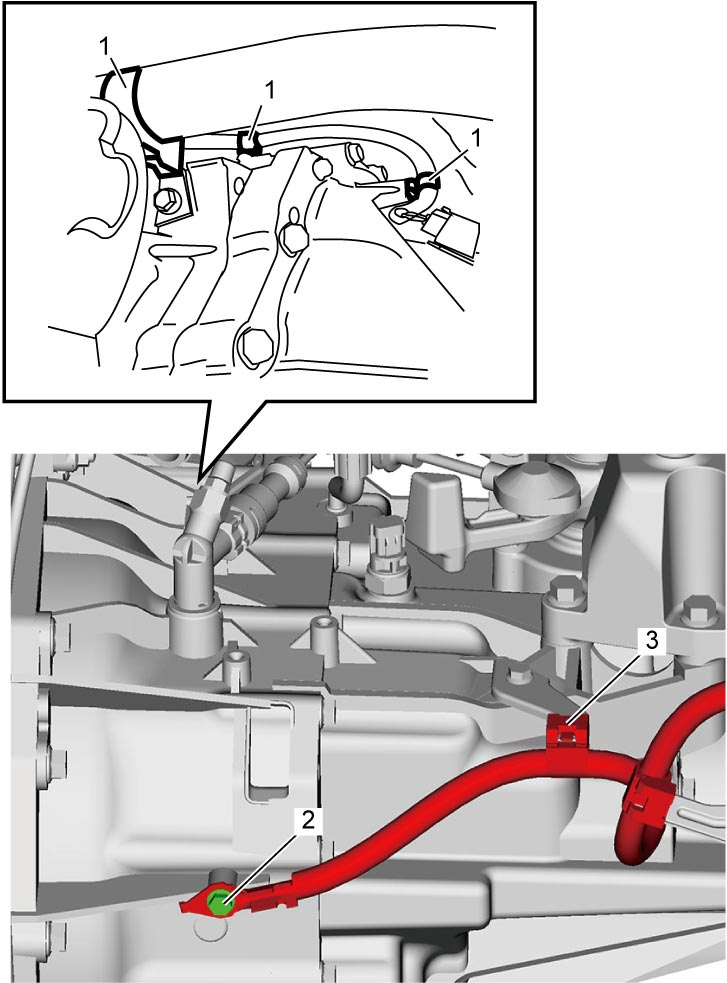
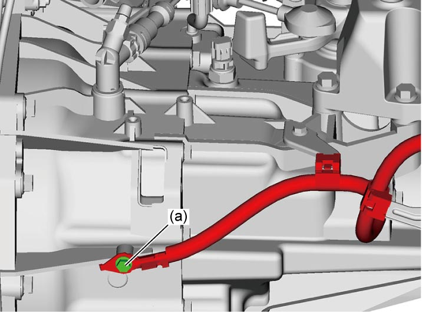

5B
| Manual Transaxle Unit Dismounting and Remounting |
Dismounting
1)Remove air cleaner assembly and air cleaner suction hose. 
2)Remove battery and battery tray.
3)Remove ECM and ECM bracket.
4)Disconnect boost pressure sensor with IAT sensor-2 connector (1).
5)Remove intercooler outlet pipe (2) and intercooler outlet hose No.2 (3).


 "Expand image")
6)Remove clutch fluid pipe.
7)Disconnect gear shift and gear select control cables from transaxle.
8)Disconnect neutral position switch connector and clamp, if equipped.
9)Disconnect back up light switch connector and clamp.
10)Disconnect engine harness clamps (1), ground terminal bolt (2) and battery ground cable clamp (3).
11)Disconnect steering lower shaft from pinion shaft.

 "Expand image")
12)Hoist vehicle.
13)Remove engine undercover and left front fender lining.
14)Remove exhaust pipe.
15)Remove starting motor.
16)Drain transaxle oil.
17)Remove front drive shaft assembly.
18)Loosen bolts and nuts fastening engine.
19)Support engine assembly, refer to Engine Assembly Removal and Installation:K14C.
20)Remove front suspension frame.
21)Remove the following parts.
•Engine left mounting stiffener
•Engine left mounting
•Engine left mounting bracket
•Engine left mounting
•Engine left mounting bracket
22)Support transaxle with transmission jack.
23)Remove gear shift & select shaft assembly.
24)Remove bolts and nuts fastening engine and transaxle and then detach transaxle from engine.
Remounting
Reverse dismounting procedure noting the following points.
NOTICE:
Failure to take proper precautions when remounting the manual transaxle can cause damage to parts.
•When installing the transaxle, be careful not to let the drive shaft scratch the oil seal.
Oil leakage may occur if the oil seal lip is scratched by the drive shaft.
•Do not use a hammer when installing the drive shaft joint into the differential gear.
Hitting the drive shaft joint with a hammer will damage the joint.
•HO2S-2 harness will be damaged if it is pinched between manual transaxle and other parts such as catalytic converter or HO2S-2 sensor itself.
Check that the HO2S-2 harness is not pinched or hooked when installing the manual transaxle
Oil leakage may occur if the oil seal lip is scratched by the drive shaft.
•Do not use a hammer when installing the drive shaft joint into the differential gear.
Hitting the drive shaft joint with a hammer will damage the joint.
•HO2S-2 harness will be damaged if it is pinched between manual transaxle and other parts such as catalytic converter or HO2S-2 sensor itself.
Check that the HO2S-2 harness is not pinched or hooked when installing the manual transaxle
•Tighten each bolt and nut to specified torque.
•Add transaxle oil.
•Bleed clutch system.
•Check function of engine, clutch and transaxle.
•Check that there is no oil leakage and fluid leakage at each connection.
•Check front wheel alignment.
—Ground terminal bolt
—Guide case No.1 and No.2 bolts:
—Gear shift interlock bolt:
—Gear shift locating spring and neutral position switch:
—Transaxle to engine bolts and nut:
—Engine left mounting, stiffener and bracket bolts and nuts:
—Engine rear torque rod and bracket bolts:
—Suspension frame mounting No.1 and No.2 bolts
—Front drive shaft nut:
—Starting motor mounting bolts:
•Set each clamp for wiring securely.
 "Expand image")
—Gear shift interlock bolt:
—Gear shift locating spring and neutral position switch:
—Transaxle to engine bolts and nut:
—Engine left mounting, stiffener and bracket bolts and nuts:
—Engine rear torque rod and bracket bolts:
—Suspension frame mounting No.1 and No.2 bolts
—Front drive shaft nut:
—Starting motor mounting bolts:
•Add transaxle oil.
•Bleed clutch system.
•Check function of engine, clutch and transaxle.
•Check that there is no oil leakage and fluid leakage at each connection.
•Check front wheel alignment.